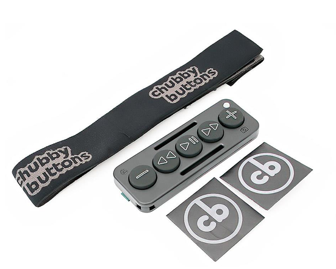

Our Journey | Our Mission to Enhance Your Outdoor Experience
The Origin Story
Chubby Buttons was founded on the belief that outdoor activities should be seamlessly integrated with modern technology. Our journey began with a vision to create a device that offers ease of control, durability, and compatibility in any environment. From winter sports to hiking and cycling, we designed Chubby Buttons to meet the needs of adventurers around the world. Our team of engineers and outdoor enthusiasts is passionate about creating products that combine functionality with fun, making your outdoor experiences better than ever.
The concept for Chubby Buttons was born out of necessity. Our founders, a group of tech enthusiasts and passionate adventurers, recognized a common challenge during their outdoor escapades: the struggle to manage devices while on the move, especially in cold or challenging conditions. The simple act of changing a song or answering a call could mean stopping, fumbling with gloves, or risking exposure to harsh weather. We knew there had to be a better way—one that would keep adventurers moving seamlessly without compromising on comfort or safety.
Inspired by this need, we set out to design a solution. After countless brainstorming sessions, sketches, and prototypes, Chubby Buttons was created: a Bluetooth remote that was not only waterproof and shockproof but also had large, glove-friendly buttons that could be operated with ease. It was built to empower users to control their devices effortlessly, no matter the conditions.
What Sets Chubby Buttons Apart
Chubby Buttons is more than just a remote; it’s a thoughtfully engineered tool that integrates seamlessly into your outdoor lifestyle. Unlike conventional remotes that can be cumbersome or fragile, Chubby Buttons is built with rugged durability in mind. We knew that adventurers needed something they could rely on—something that would withstand the rigors of outdoor life without fail.
Our design features oversized, responsive buttons that allow for simple and intuitive operation. Whether you’re wearing bulky ski gloves or cycling gloves, Chubby Buttons ensures that you maintain complete control over your music and calls without breaking your rhythm. The waterproof design means it performs flawlessly even in wet conditions, and the shockproof casing stands up to drops, bumps, and rough handling.
Built by Adventurers, for Adventurers
At Chubby Buttons, our team comprises not just engineers but true adventurers at heart. We hike, we bike, we snowboard, and we understand the demands of being outdoors. This shared passion has shaped every aspect of our product development. From initial sketches to field tests on snowy mountains and muddy trails, our product goes through rigorous testing to ensure it meets real-world needs.
We’re not just creating a device; we’re creating an experience. We want Chubby Buttons users to focus on their adventure without being distracted by inconvenient tech. Our goal is to make outdoor activities as smooth and enjoyable as possible, merging technology and nature seamlessly.
Durability Meets Innovation
Durability is one of the core pillars of Chubby Buttons’ design philosophy. When we started our design process, we knew that our product needed to be as tough as the people using it. This meant choosing materials that could endure the elements and incorporating design features that provided both resilience and functionality. Chubby Buttons is encased in high-grade materials that are waterproof and shock-resistant, giving users confidence that their device will keep up with them, rain or shine.
Beyond its durability, Chubby Buttons also features state-of-the-art Bluetooth connectivity that ensures a stable connection with your device, even in areas where other devices might struggle. The pairing process is simple and secure, and once connected, users can enjoy uninterrupted control over their devices, enhancing their experience without any hassle.
A Versatile Companion for All Activities
One of the standout features of Chubby Buttons is its versatility. While initially designed with winter sports enthusiasts in mind, the device has proven itself invaluable across a range of activities. Hikers can keep their focus on the trail while managing their audio, cyclists can adjust their playlists without taking their hands off the handlebars, and runners can easily control their music without breaking stride.
Our users have shared stories about how Chubby Buttons has transformed their outdoor experiences. “I love using my Chubby Buttons on my mountain biking adventures,” one user said. “It’s attached securely to my handlebars, and I can skip songs or adjust the volume without having to stop or lose focus. It’s become a must-have for every ride.” Such feedback reinforces our commitment to making a product that truly enhances outdoor activities.
Innovation Through User Feedback
One of our core values at Chubby Buttons is listening to our customers. We understand that no one knows what adventurers need better than the adventurers themselves. Our design team frequently reviews user feedback to identify areas for improvement and innovation. The original Chubby Buttons laid a strong foundation, and the improvements in Chubby Buttons 2.0 were the direct result of feedback from our users. Enhanced button sensitivity, extended battery life, and a more ergonomic shape are just a few of the upgrades inspired by real-world experiences.
By staying connected with our users, we continue to push the boundaries of what our products can do. We strive to create technology that not only meets the current needs of adventurers but anticipates future challenges and offers solutions.
Our Mission and Values
Our mission is simple: to make technology that enhances, rather than interrupts, outdoor experiences. We believe that the best tech blends so seamlessly into your activities that you forget it’s even there. With Chubby Buttons, we want users to focus on the rush of the ride, the peacefulness of the hike, or the thrill of the slope—not on fumbling with their devices.
Our core values are centered on quality, innovation, and community. We believe that by prioritizing these principles, we can continue to develop products that resonate with our customers and stand the test of time. Every Chubby Buttons device that goes out into the world is a testament to our dedication to excellence.
Looking to the Future
As we move forward, we are excited about expanding our line of products and enhancing what Chubby Buttons can offer. Our vision includes developing even smarter integrations with wearable tech, expanding compatibility with new devices, and improving sustainability in our manufacturing process. We are committed to staying at the forefront of outdoor technology and ensuring that our products contribute positively to the outdoor experience.
Join the Chubby Buttons Community
Being a part of the Chubby Buttons community means more than just owning a device—it means sharing in the spirit of adventure. We love seeing our users share their experiences, photos, and stories of how Chubby Buttons has become an essential part of their journeys.
We encourage you to join us, share your stories, and connect with fellow adventurers who share your passion for the outdoors. With Chubby Buttons, the great outdoors becomes even greater. Experience the blend of technology, resilience, and user-focused design, and make your next adventure more enjoyable, seamless, and connected.